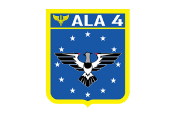

| Formação | Instituição |
Sou estudante do curso de programação Web Full Stack da Labenu. Atualmente possuo as habilidades iniciais do front-end, na qual possuo conhecimentos de JavaScript, HTML e CSS. |
|
Sou formado no curso de tecnologia de Análise e Desenvolvimento de Sistemas no qual é um
curso superior que da aptidão para dar respostas efetivas aos desafios de custo, prazo,
qualidade, produtividade, interação e integração dos negócios das empresas, cada vez mais
dependentes dos recursos da tecnologia da informação. |
Videomaker, filmaker, audiomaker, fotógrafo aéreo. |
|
Mais de 10 anos de experiência no setor de manutenção e suporte técnico de hardwares e softwares, trabalhando tanto de forma autonoma como no setor público, no qual trabalhei por 8 anos na Base Aérea de Santa Maria (ALA 4). |
 |
O eterno 'TI da galera', no qual me orgulho de já ter implementado um sistema de controle de cruzeiro (piloto automático) em um carro de verdade, aprendendo totalmente em vídeos russos e ingleses, no qual são regiões que existem muitas pessoas com conhecimentos em modificações das ECUs de carros da marca Ford. |
|---|